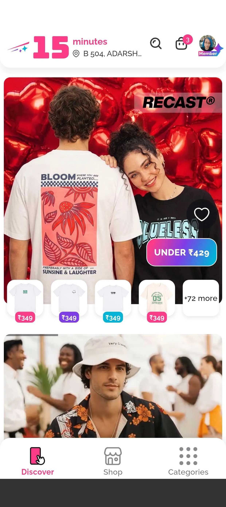
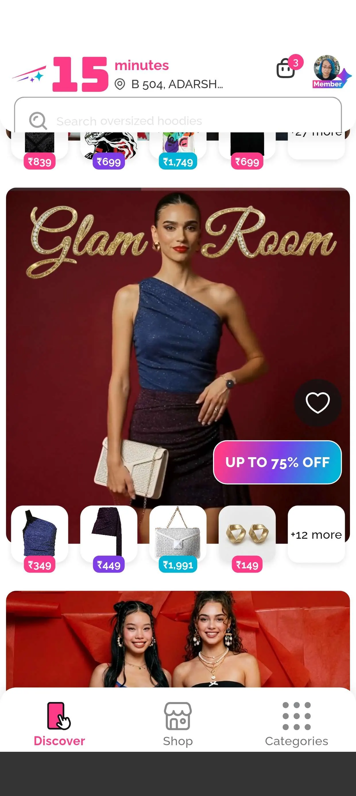
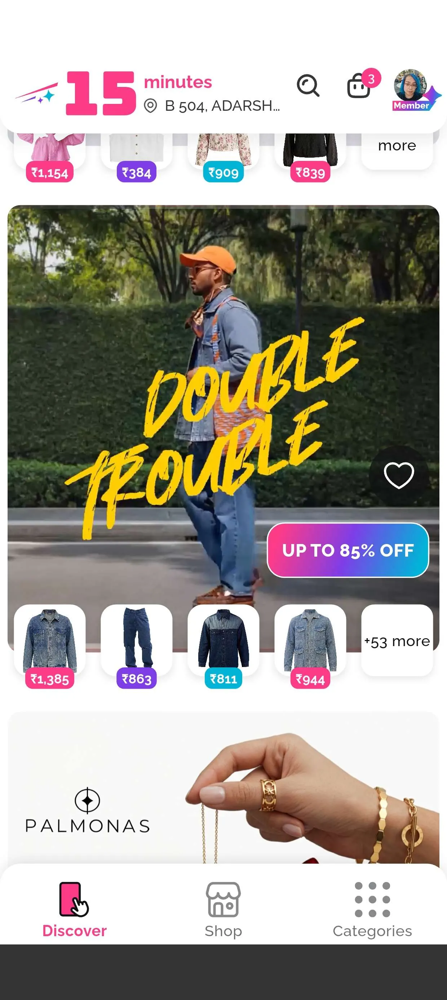
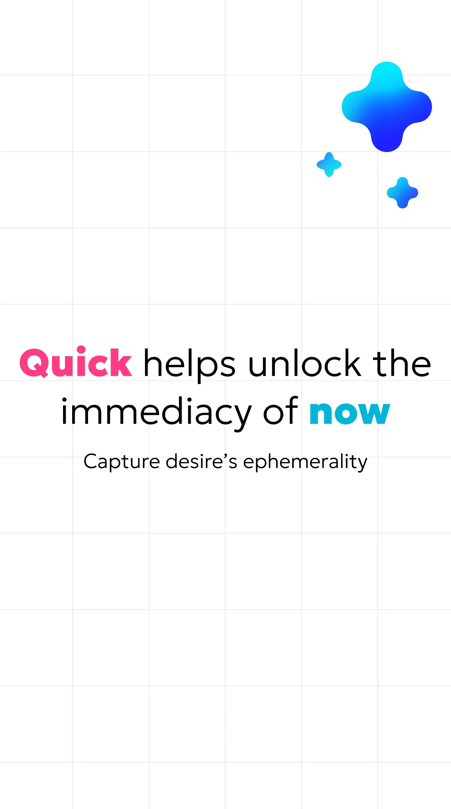
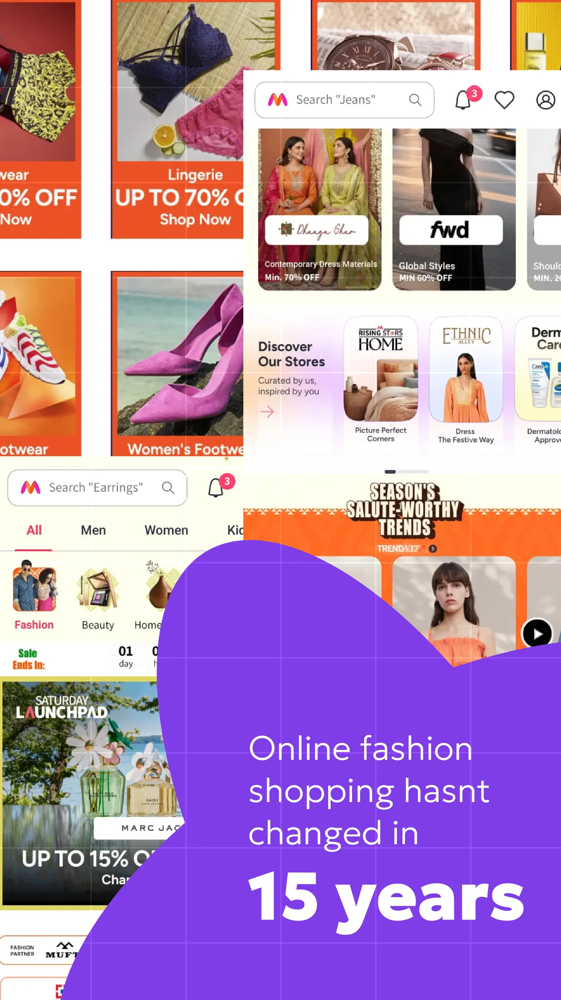
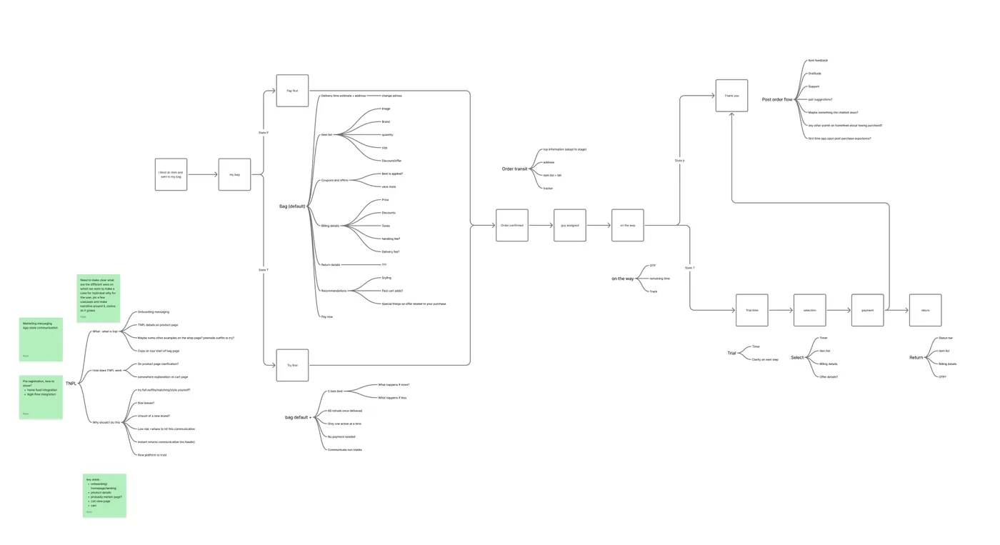
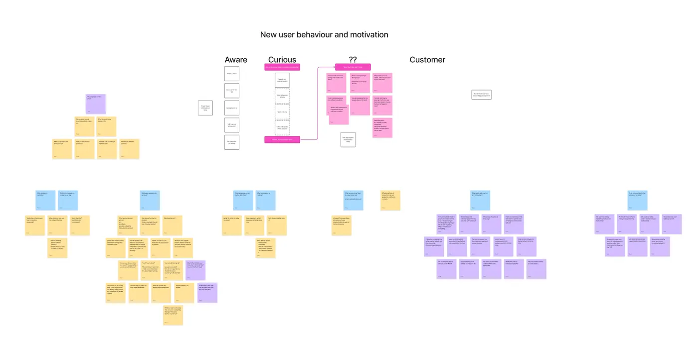
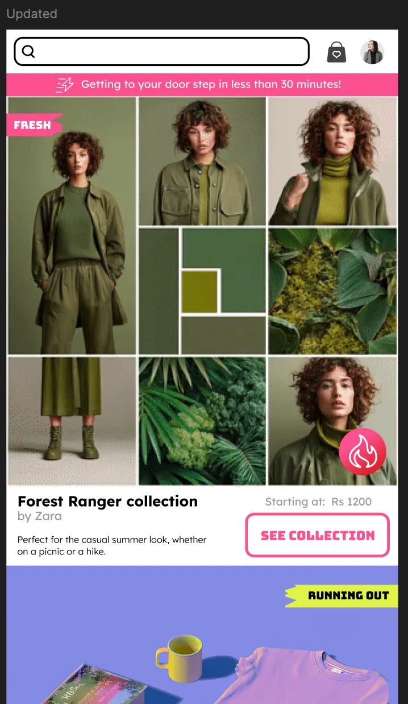
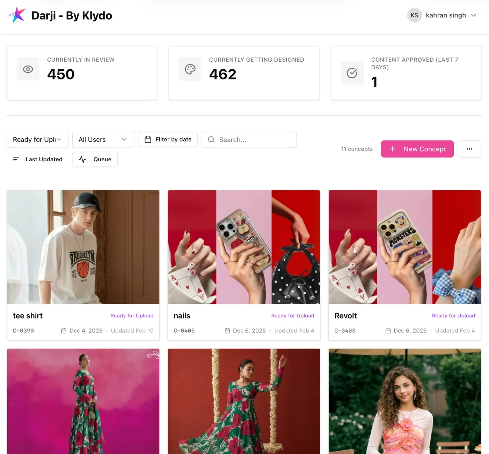
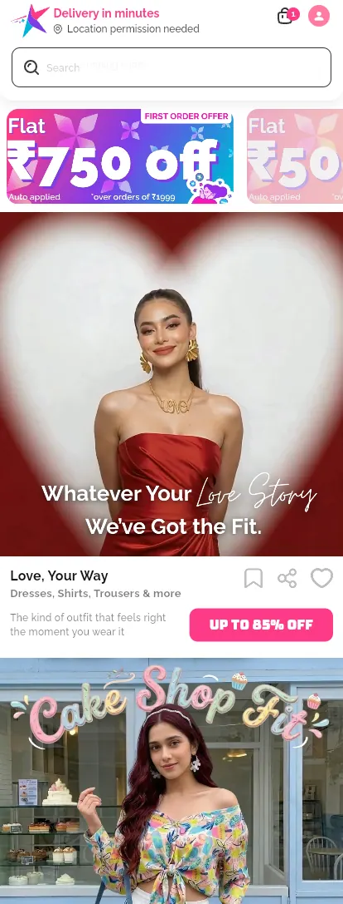

Building a high-growth startup to bring fashion into the instant-gratification era.
Klydo came to us as 4 people with a dream of capturing the new 15-minute shopping channel for fashion. The co-founders needed to create their vision and differentiate their product in a market where the leader was Slikk — a year+ older with a massive lead in name recognition and 1,000+ orders per day.
Klydo needed the details of the product — from customer acquisition to fulfillment experience — while also figuring out the revenue model that would drive the kind of CAC:LTV ratios that would let them raise a significant Series A in early 2026, and a Series B within the following 6–12 months.
Product Strategy
Brand Story
GTM
IndiaHigh-growth startupPre-Series A
first — turn dream into product
To win, first coalesce the product out of the abstract dream.
For Klydo, the first challenge was a true design challenge: translate a loose idea into a real, tangible product. When building something new, it's hard to be guided by user feedback. Instead, we drew inspiration from the content our users already know — short-form videos, influencer reels — to create a unique experience that successfully drew in the audience. The top cohort spent 30+ minutes per week shopping, and drove a disproportionate percentage of orders.

by showing products in lifestyle settings, users build a connection between the aspirational lifestyle and the acquirable product


building for desire is rare in India — where most consumer businesses differentiate on price; Klydo reaches users that are part of a new generation, engaged with fashion and looking for inspiration
↓ then — find the place you fill in your users' lives
offline + online, in one swipe
Understand the place you fill in your users' lives — and you will find your brand's story.
Users switched both their offline and online spends to Klydo as the quick-commerce channel combined the best of both worlds. Allowing trials at home was a natural extension of this positioning, once we could solve for containing the fraud potential and logistical burdens.
We created an experience focused on desire — to bring users into the experience of each item of clothing. This lifestyle experience, powered by Gen-AI, shows users the clothing in an aspirational world.


some of our biggest ROI comes in storytelling — for Klydo, we deliver the best of the offline and online shopping experiences, through quick commerce

↓ then — wear all the hats, until the team grows
design, brand, ops, narrative — whatever it takes
Successful startups need people to wear many, many hats.
When the branding person quit after 6 weeks, we jumped into logo and brand design. When the commercial story started to lag, we stepped from design and product to revenue, as operators and system builders. When the narratives started to diverge, we brought in a best-selling writer to create the myth that would unify the team and the market story. By working across disciplines, we helped the Klydo team see the forest, while continuing to deal with the many trees.



↓ and then — we shipped
Diwali launch → 150 daily sales by Jan 1
We launched before Diwali, pivoted the experience a couple of times through holiday sales, and hit 150 daily sales before Jan 1.
By applying first-principles thinking and experience from other engagements — in similar industries and different — we helped Klydo find success despite big hiccups, with issues from selection to differentiation to getting blacklisted by Google.
This is one of our ongoing projects and we have been enjoying every twist and turn — bringing our skills to bear to help Klydo find success in creating a new fashion paradigm.

creating something new — even in retail — is always possible, with determination to build from true insights, and not holding on too hard when new data emerges